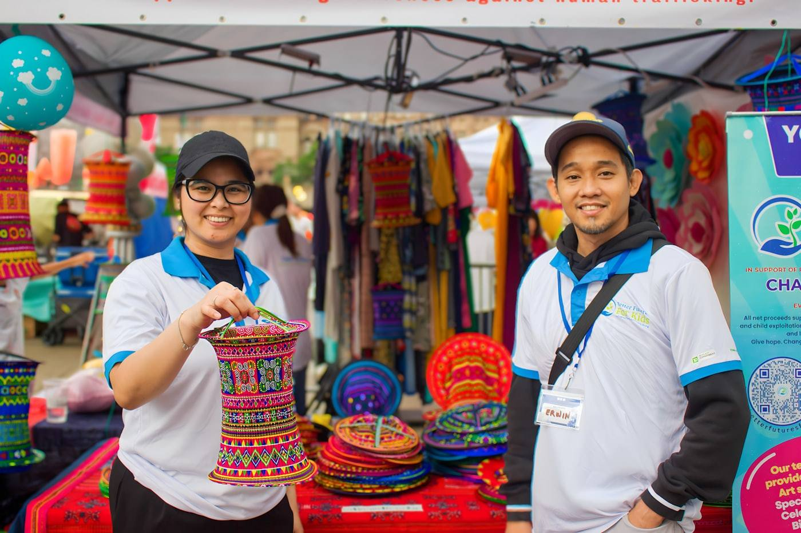

Las oportunidades para vender, en un solo lugar
Ferias, mercados de temporada, pop-ups y convocatorias con sus cupos, su costo y su plazo a la vista. Armas tu ficha una vez y postulas a todas sin repetir datos.
Cierran primero
Cómo funciona
-
1
Creas tu ficha una vez. Qué vendes, fotos, comuna y los papeles que ya tienes. Queda guardada y la revisamos.
-
2
Buscas la oportunidad que te sirve. Filtras por comuna, rubro, fecha y costo, y ves las bases completas antes de decidir.
-
3
Postulas respondiendo unas pocas preguntas. Las de esa oportunidad en particular. Tus datos ya están.
-
4
Sigues el estado desde tu cuenta. Postulado, seleccionado o confirmado, sin tener que preguntar por interno.
Por qué usarlo
Postular a una feria hoy significa rastrear convocatorias por Instagram, llenar el mismo formulario cada vez y quedarse esperando una respuesta que a veces no llega.
- CentralizaciónTodas las oportunidades en una página, sin perseguir publicaciones que ya vencieron.
- TransparenciaCupos, costo, qué incluye y qué se exige, escritos antes de que postules.
- RapidezTu ficha se llena una vez. Cada postulación después son unas pocas preguntas.
- SeguimientoEl estado de cada postulación queda a la vista en tu cuenta.
¿Estás organizando un evento?
Nos envías las bases y publicamos la convocatoria. Recibes las postulaciones ordenadas por coincidencia con el perfil que buscas, con los papeles de cada emprendimiento revisados, y la selección la sigues decidiendo tú.

Preguntas frecuentes
¿Tiene costo para el emprendedor?
No. Revisar las oportunidades y postular es gratis. Lo que puede tener costo es el stand de cada evento, y ese valor lo fija quien organiza. Siempre aparece en la ficha antes de postular.
¿Ustedes eligen quién participa?
No. Ordenamos las postulaciones y revisamos los antecedentes, pero la selección la decide la productora o la institución que organiza el evento.
¿Necesito estar formalizado?
Depende de cada oportunidad. Algunas exigen inicio de actividades o resolución sanitaria, otras no piden nada. El requisito aparece escrito en la ficha de la oportunidad.
¿Qué pasa si no quedo seleccionado?
Tu postulación queda registrada. Si después se libera un cupo y respondiste que aceptas ser contactado, te escribimos. No manejamos lista de espera automática: el contacto lo hacemos uno por uno.
¿Cómo se paga cuando quedo seleccionado?
Por transferencia, dentro del plazo que indique la oportunidad, enviando el comprobante por correo. Recién cuando validamos el pago la participación queda confirmada.